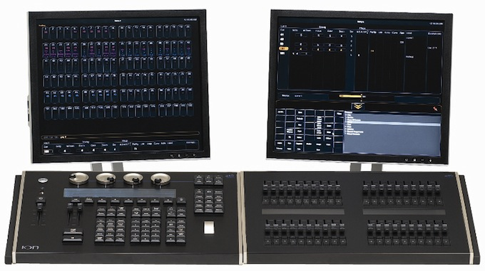

User Tools
- Logged in as: Will Pimblett (will)
- Admin
- Update Profile
- Logout
Sidebar
tech:lx:etc_ion
ETC Ion

We use the ETC Ion with a 20 fader wing in the main theatre space (half as many faders as the picture above).
The Ion is a powerful but very easy to use lighting desk, currently very popular in the industry too. It's part of the Eos family (Eos, Gio, Ion, (Element)), all of these consoles have the same software, so if you've used one you should be able to use them all.
Training
New Theatre ION Training Pack
Learning the basics of the Ion is part of lighting training. However the desk has many more advanced features. If you're interested in more in depth training contact the Technical Director.
If you fancy leaning in your own time there are a set of videos that, while long, do take you through all the features of the console. There are just under 50 ~3/5 min videos in part 1 and part 2.
- Introduction To Ion videos (part 1)
If you want a grumpy old man's view of moving from a Strand to an Ion have a look here: http://lampie.org/ion.html. He summerises the part 1 videos with a decent amount of sarcasm.
A fantastic quick-reference for the Ion is the tea break tutorial pack, find the PDF in this download:
Templates
This is a base show file for the Ion that does the patch for you and sets sensible settings.
This template is probably out of date, we'll keep it here for backup but please use the copy actually on the desk's Show Archive. It is backed up onto the LX memory stick and should be routinely backed up to here — Will Pimblett 2014/03/17 02:29
This is a template for offline editing that puts all the hardware buttons on a magic sheet. This negates the need to have the button map to hand.
tech/lx/etc_ion.txt · Last modified: 2019/05/22 01:02 by Sam Osborne